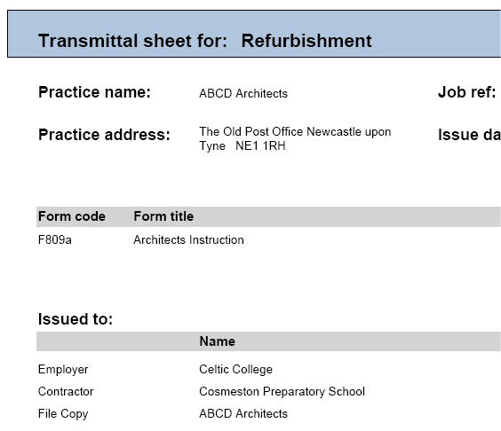

Transmittal sheets are automatically generated and exported in a PDF format with every contract administration form issued.
They can be previewed before printing by clicking on the Print Preview button with the Form Distribution List open in the editor.

A Transmittal Sheet is populated with the following information:
Practice name - This is the company name as entered in the Issuer Details.
Practice address - This is the company address as entered in the Issuer Details.
Job ref - The Job Reference as entered in the Job Details for the active job.
Issue date - The date the contract administration form was issued.
This is automatically generated when the user presses the Issue form button with the contract administration form open in the editor.
Form code - The form code as it appears in the bottom left hand corner of the printed form.
Form title - The form title as it appears in the active job.
Form number - The form sequence number.
Issued to - A list of recipients of the form. The team members listed here will be those that appear in the Distribution List with a ticked check box in their send column.
Contact person - This is the member of staff in the Issuing company who should be contacted for further information. It is populated from the allocated staff field in the Job Teams editor.
When a form is issued, the user will be prompted to enter an issue reason - this will also be included on the Transmittal sheet.
See Also:
Issuing forms
Print Preview form
Global Distribution List
Form Distribution List